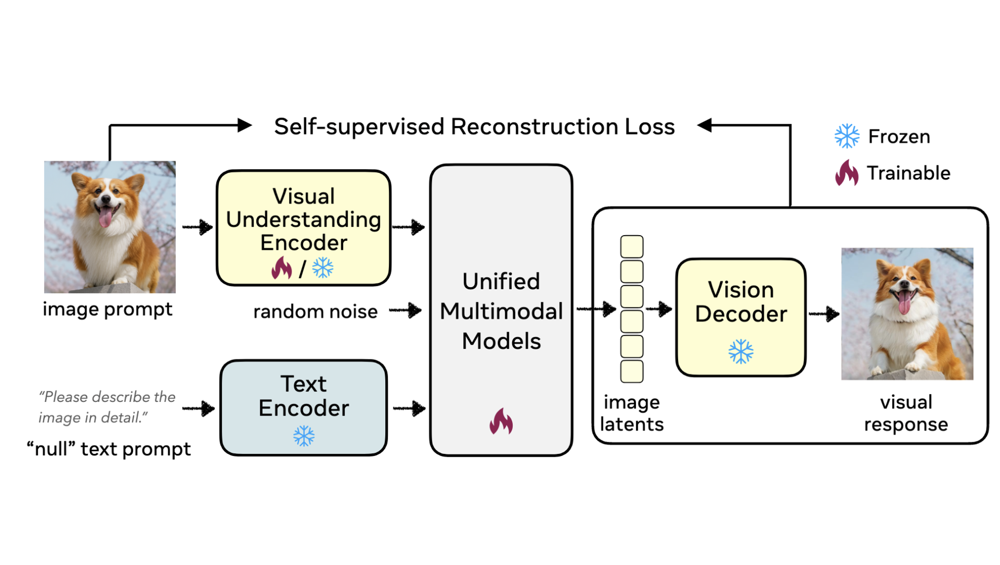
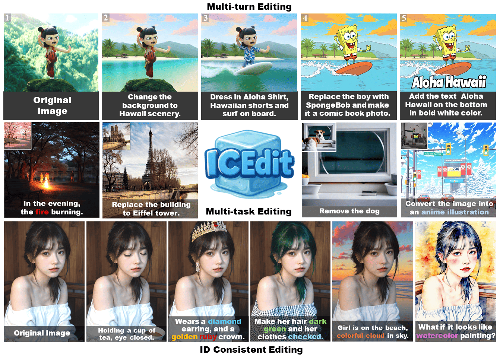
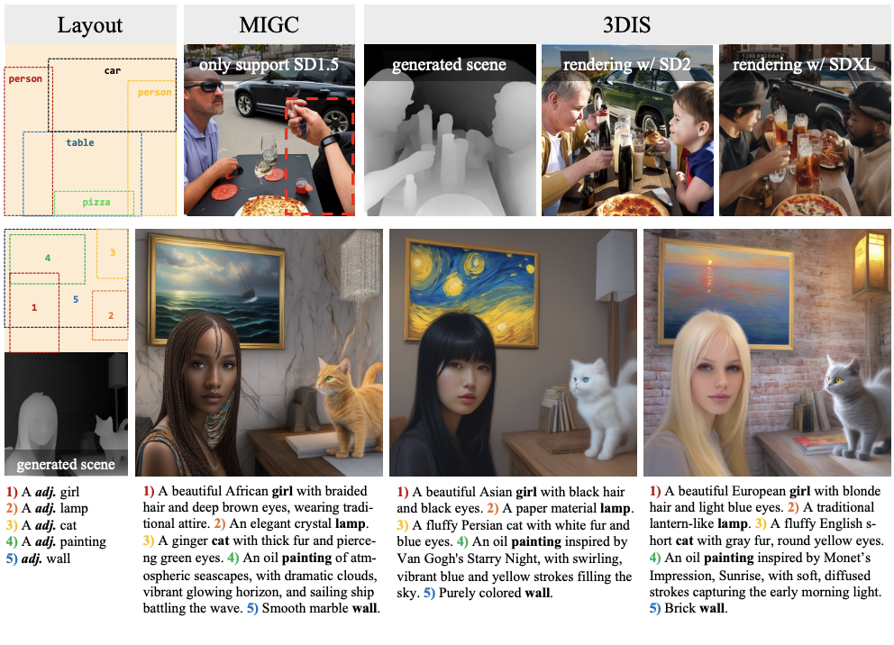

Selected Research
I'm interested in computer vision, generative models, and multimodal learning.
|
|

|
Reconstruction Alignment Improves Unified Multimodal Models
Ji Xie,
Trevor Darrell,
Luke Zettlemoyer,
Xudong Wang
ICLR 2026
paper
/
code
/
model
A single reconstruction loss improves generation and editing capabilities of Unified Models.
|
|

|
In-Context Edit: Enabling Instructional Image Editing with In-Context Generation in Large-Scale Diffusion Transformer
Zechuan Zhang,
Ji Xie,
Yu Lu,
Zongxin Yang,
Yi Yang
NeurIPS 2025
paper
/
code (2K Stars🌟)
/
model
ICEdit enables instructional image editing through in-context generation in large-scale diffusion transformers.
|
|

|
3DIS: Depth-Driven Decoupled Instance Synthesis for Text-to-Image Generation
Dewei Zhou*,
Ji Xie*,
Zongxin Yang,
Yi Yang
ICLR 2025 (Spotlight)
paper
/
code
/
model
3DIS uses depth-driven decoupled instance synthesis for controllable text-to-image generation.
|
"Reconstruction Alignment Improves Unified Multimodal Model"
Apple Research · Invited Talk · Hosted by Chen Chen and Yinfei Yang
October 2025
|
SenseTime Scholarship
Top 30 recipients annually in China
June 2025
|
Gold Medal, International Collegiate Programming Contest (ICPC), Regional
October 2022
|
Gold Medal, China Collegiate Programming Contest (CCPC), Regional
October 2022
|
Miscellaneous
I was a member of the ZJU ACM/ICPC team and achieved a rating of
2478 on
Codeforces.
You can find my old blog here — it contains my competitive-programming notes :)
|
|
{kind=link}